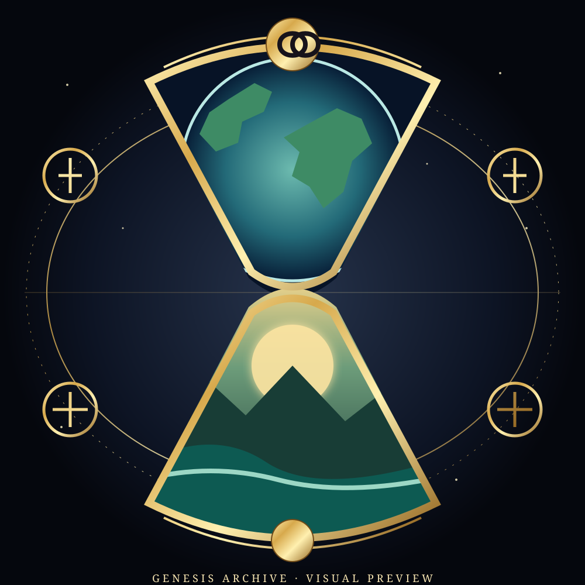

GENESIS ARCHIVE #001

A symbol of what we choose to preserve.
An hourglass becomes a vessel for two possible futures: Earth held as a living memory above, and a regenerative civilization imagined below. Its orbiting emblems reference health, science, knowledge, clean energy, ecology, cooperation, justice and exploration.
GENESIS ARCHIVE #001 is conceived as the visual frontispiece to a proposed Human Continuity Archive — an initiative intended to make reliable knowledge and practical resources more discoverable across the systems that shape our shared future.
Collector disclosure
Ownership of the NFT conveys ownership of the blockchain token only. It does not transfer copyright, commercial reproduction rights, a share in a fund or organization, investment returns, governance rights or guaranteed future utility. The Human Continuity Archive remains a concept-stage proposal unless a separate operating entity and binding terms are established.